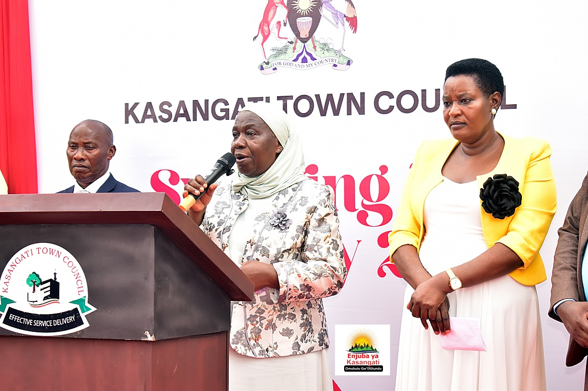
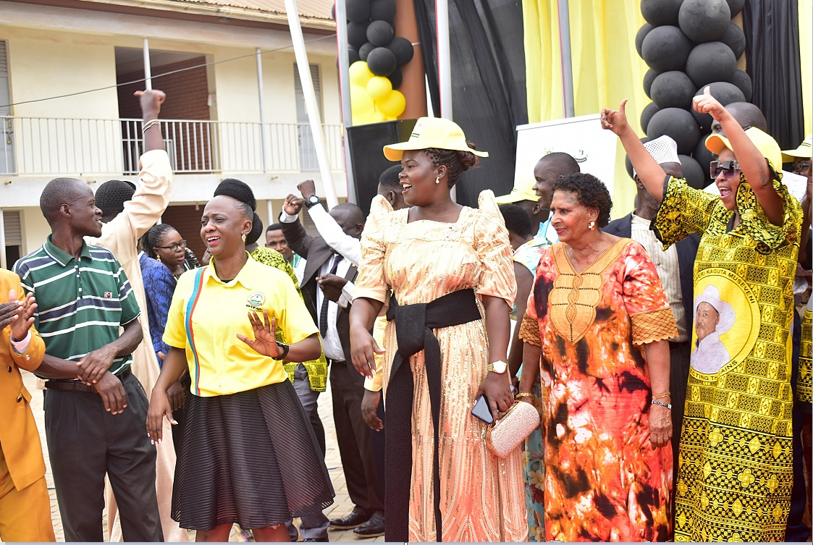
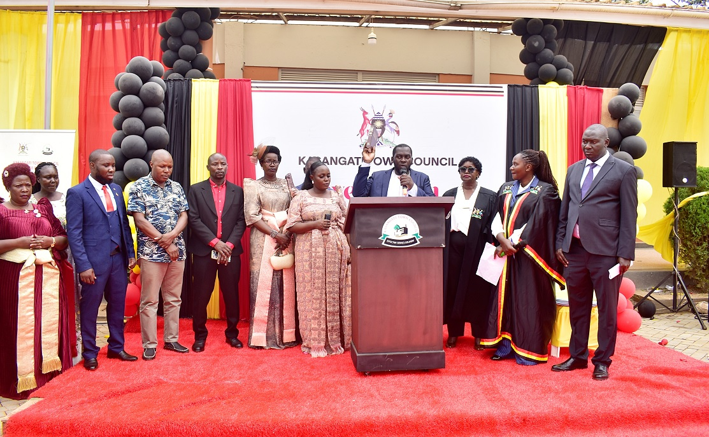
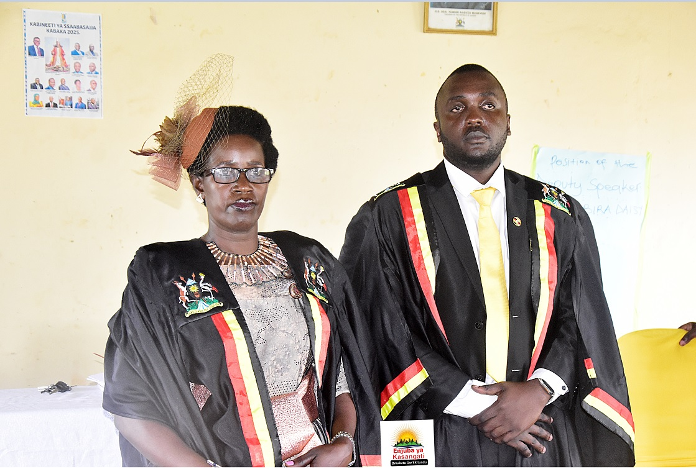

In a landmark event that marks a fundamental shift in local administration, the Kasangati Town Council leadership team was officially inaugurated yesterday, Friday, May 29, 2026. Taking the oath of office in a colorful ceremony, the incoming Mayor, Hajji Kazibwe Baker, delivered a firm, unifying message to a community transitionally weary of partisan friction, declaring a complete rejection of hate-driven agendas and isolated isolationist politics.
"Today is a historical day in Kasangati Town Council," Mayor Kazibwe announced. "It is the day of swearing in and inauguration of a fundamental leadership team. A leadership that does not separate people according to tribes, religions, or political parties. I will firmly reject and isolate anyone who brings hate messages into our chambers."
Acknowledging the immense responsibility resting on his shoulders for the next five years, the Mayor appealed to all community stakeholders, especially religious figures, to form a united front with his administration to build and fast-track development in Kasangati.
"Without considering differences in religious backgrounds, tribes, or political parties, I call upon all the councilors who have just sworn in, the Local Council 1 Chairpersons, and all citizens of Kasangati to come together so we can build our town council," Kazibwe pleaded.
Strategic Lobbying & Government Cooperation
In an unexpected shift from traditional local leadership alignment, Mayor Kazibwe—who stood and won as an independent candidate specifically to bridge political divides—pledged proactive diplomacy with the central government. Turning directly to the guest of honor, the Minister for Kampala Capital City and Metropolitan Affairs, Hajati Minsa Kabanda, and the Wakiso District Resident District Commissioner (RDC), Justine Mbabazi, he affirmed a cooperative future.
"We are not going to be rebellious to the government. Our people need service delivery," the Mayor declared. He revealed that he is ready to lobby the highest offices in the land to address local challenges. Specifically, he pointed to five infrastructural projects promised by the Kampala Capital City Authority (KCCA), vowing to consistently follow up until the roads are fully tarmac-surfaced.

The Mayor also paid distinct tribute to his wife, Mrs. Kazibwe, for her steadfast support, and acknowledged the smooth transition provided by outgoing Mayor Tom Muwonge. "I pledge that where Muwonge stopped is exactly where I will begin from," he added, noting that addressing public health via a dedicated emergency ambulance and cleaning up the town's sanitation are top priorities.
Turning to technical governance, the Mayor assured Town Clerk Mr. Jude B. Muganga that the executive branch would work seamlessly with technical officers, demanding absolute honesty, professional transparency, and zero administrative friction.
Central Government Pledges: PDM Boosted to Shs 300M
Both Minister Minsa Kabanda and RDC Justine Mbabazi expressed immense satisfaction with Mayor Kazibwe's inclusive stance. Minister Kabanda promised that the central government's doors would remain wide open for Kasangati, emphasizing that national support flows smoothly where cooperative governance exists.
💰 Parish Development Model (PDM) Updates
RDC Justine Mbabazi brought massive financial news to the local populace, officially announcing that PDM funding has been boosted to Shs 300 million per parish. She strongly encouraged women and Persons with Disabilities (PWDs) to utilize their mandatory allocations within the fund to elevate their socio-economic statuses, adding that the state will wholeheartedly support Kasangati's local development now that inclusive dialogue has been prioritized.
In his introductory address, Town Clerk Jude B. Muganga welcomed the incoming assembly with a call to service grounded strict legality: "It is time to come and serve as the law guides. We are not here to please individuals; we are here to serve our community. Our record of integrity stands—the Chief Magistrate in our midst can bear witness that we have never had an administrative case dragged to her court. My office doors are open for guidance."
Council Composition and Cross-Party Cabinet Selection
A total of 31 councilors representing the nine administrative wards of Kasangati Town Council, special interest groups, PWDs, the elderly, and the youth were successfully sworn in by the Chief Magistrate. However, the swearing-in of the female councilor-elect for Nangabo Ward was legally halted following a court injunction issued after a candidate contested the declared victory results over mis-announcement allegations.


The general mood outside the hall was exuberant, characterized by mutual singing and drumming from supporters of the National Unity Platform (NUP) and the National Resistance Movement (NRM). While NUP holds the majority of seats in the house, followed by NRM, the People's Front for Freedom (PFF), and independent members, the subsequent election of house leaders reflected true national unity.
During the internal voting session overseen by the Chief Magistrate, Hon. Kawule Windsor (NRM) of Masooli Ward clinched the Speaker's seat with 18 votes, defeating Hon. Mike Katabira (NUP) of Wampewo Ward who garnered 12 votes, alongside two invalid ballots. Long-serving councilor Hon. Nakabira Daisy successfully retained her position as Deputy Speaker.

Demonstrating his commitment to "oneness," Mayor Kazibwe Baker balanced his executive committee appointments perfectly across party divides:
- Vice Chairperson: Hon. Ndagire Rose (NRM — Kabubbu Ward)
- Secretary for Finance: Hon. Mike Katabira (NUP — Wampewo Ward)
- Secretary for Works: Hon. Bindandi Robert (Independent — Kiteezi)
- Secretary for Gender & Social Services: Hon. Carol Nansubuga (PFF — Wampewo)
This balanced cross-party configuration was highly lauded as the first practical proof of the Mayor’s pledge to synthesize political diversity for civic progress. Speaking to Enjuba ya Kasangati right after confirmation, both the Speaker and the Vice Chairperson extended their profound appreciation to the house and vowed an unyielding developmental alignment with the mayoral office.